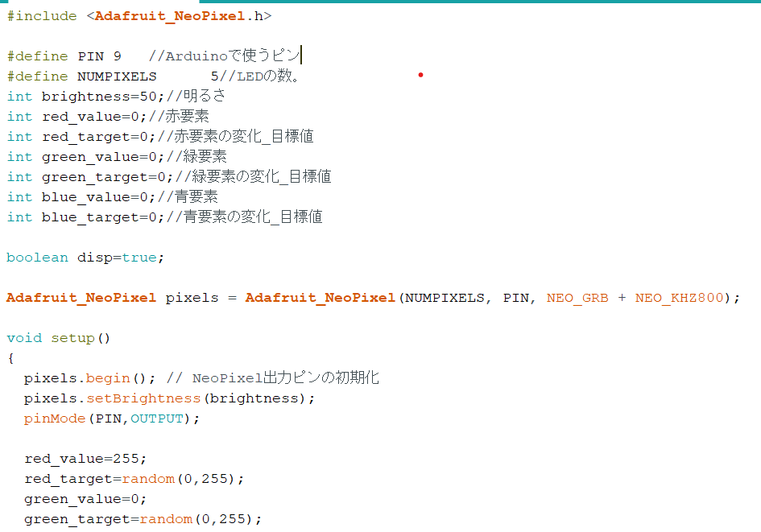
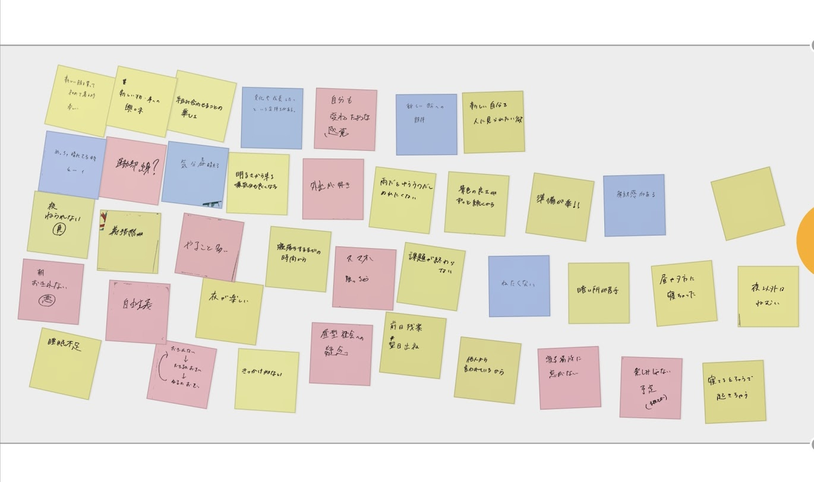

課題2
- 授業内容

RGBのカラーコード(0~255)を使い、自分の好きな色を点滅させた。例えば濃いめの紫は(128,0,128)。
delayの後、数字を指定することで点滅速度を変えることができる。数字が小さいと早く、大きいと遅くなる。
応用として色が不規則になるようにプログラミングをした(random関数)。
- POV

1番印象に残っていたのは「めっちゃ晴れてるとき」の推測だった。人はなぜ晴れてると気分が上がり、逆になぜ雨が降ると憂鬱になるのか、とても気になるところである。
他の班の、「服を選ぶとき」に負の感情を抱くことに共感した。他の人にどうみられるのか気にしてしまうのは自分と同じだと思った。
デザイン演習３・４トップページ
XBPトップページ